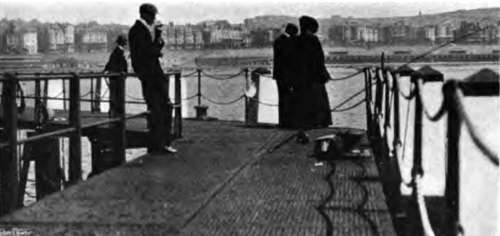

Fishing From Piers And Harbours. Part 2
Description
This section is from the book "Fishing", by Horace G. Hutchinson. Also available from Amazon: Fishing.
Fishing From Piers And Harbours. Part 2
When there are large mackerel round a pier, as sometimes occurs in hot summers at Bournemouth and elsewhere on the south coast, the drift-line is a killing method of fishing, but it is essential to fish on the falling tide. August mornings when the tide is high about four are the most promising, and the angler fishes from, say, half-past four till seven. A very small and lively sand-eel is the best bait, but a strip of mackerel, little more than skin, cut as described on an earlier page, is also deadly, and I have even had good sport using a couple of small mussels. For mackerel fishing from piers, whether with the drift-line or float tackle, which is also useful, a trout-rod is an absolute necessity. A fish which twists and turns and dashes and sheers, like the mackerel, is extremely dangerous among the ironwork of a pier, and it would be quite impossible to keep it clear of collision on a hand-line, while on a stiff sea-rod the light gut, at least three yards of which is necessary in this fine fishing, would in all probability break under the sudden rushes of this sporting fish. As, owing to the peculiar structure of the mouth, mackerel, though to all appearance well hooked, are very liable to fall off the hook when hauled clear of the water, a long-handled landing-net will save many a fish that would otherwise get away. Such a net was made for me a year or two ago by Bernard, of Jermyn Street, and the handle is in three pieces, making up a total length of twelve feet or more. This might seem a cumbersome implement to use in the landing of so small a fish as a mackerel, but it is not of course handled like a smaller landing-net in a boat. I make it fast to the post beside which I am fishing, and a very little practice enables a friend to manoeuvre it, still held almost perpendicular, so as to lessen the strain of leverage that so long a handle would otherwise throw on the hands, under the struggling fish. The net is then raised, always perpendicular, hand over hand, until the fish is recovered.
Something has been said above of the risk of loss of tackle involved in fishing from the majority of piers. This risk is usually entailed in collision with the posts or cross-girders of the pier itself. It may also happen, however, that there are small rocks or sunken piles or drain pipes in the immediate vicinity of the pier, and it is a good plan when fishing for the first time from a strange pier to make a rough-and-ready survey of the surrounding bed of the sea. This may be done quite simply and effectually, albeit without much pretence to scientific method, by tying a large stone (weighing, say, a pound) lightly to a ball of cheap string and throwing it out, as if it were a lead line, in different directions, then allowing it to sink to the bottom, and drawing it slowly back so that it travels quietly over every yard of the ground to the very edge of the pier. In this way much may be learnt of obstacles, natural or otherwise, and only the stone will be lost in place of more costly leads and hooks that must otherwise have been sacrificed at the same shrine. The fisherman will learn to avoid certain sunken traps and pitfalls, of which he will carefully take the bearings by noting the post opposite which they lie, and he will at the same time mark out for himself safe places where his lead and hooks may lie at rest. Needless to say, these hydrographical surveys must be conducted at an hour when there is no one else fishing.
It would hardly be possible to offer any individual notes on the fishing to be had off most of our piers. In the first place, the fishing from piers varies even more than that to be obtained in boats, for an increase or decrease in steamer traffic, together with other artificial conditions, may influence it to a degree not felt on the outer grounds. Again, the authorities occasionally act in a somewhat arbitrary manner in respect of the angler and seem to experiment with his patience, at one time suddenly prohibiting rods, at another either putting a stop to all manner of fishing for a period, or else imposing without warning a payment for the privilege. There is nothing to urge against this charge for fishing; indeed, a small fee would sometimes have the beneficial result of keeping lads away who care little for serious fishing, and only frequent pier-heads for the pleasure of getting in every one's way. On some piers, at Deal for instance, and at Eastbourne, at Tenby and at the Mumbles, a small charge (threepence per rod for the day, if I remember rightly) has long been made. On others the charges appear to be variable in amount and arbitrary as to season, and on one small Devon pier that shall be nameless the zealous piermaster, acting no doubt for the good of his employers, had a notice board in reserve on which was printed in large type, " Good fishing at the end of the pier; twopence each," and this he promptly hung over the turnstyles as soon as a smelt was caught at the farther end of the modest structure over which he so assiduously presided.
94. -Brighton Pier.
Most of our south-coast piers may be taken, roughly, as affording pout, sand-smelt, small flat-fish, mackerel, and at night conger, in July, August, or September, and in the winter months small whiting, with the chance of now and again a large cod. A few of them also give bass, but pier-fishing for bass is perhaps the most uncertain method of seeking an always elusive fish. The piers, or what is left of them, at Littlehampton give grey mullet, and some of the docks at Plymouth and Southampton offer the same chances with that sporting fish, though not as a rule with large specimens. Mullet of heavy weight used formerly to be caught from the Admiralty Pier at Dover, but since the War Office has taken over that port for its own machinations, the fishing has gone to a resort from which the War Office makes it its business to keep the country generally. Teignmouth pier occasionally gives a few small pollack in October, and small conger may be caught at night during the warmer months with squid bait. The promenade pier at Plymouth is much resorted to in July and August nights by bass-fishers, and some really good bass and pollack are taken up to midnight, ragworms being a favourite bait. The steamer traffic is so immense at this pier that it is surprising the fish are not frightened away altogether; but no doubt familiarity breeds contempt, else the beautiful anchorages of Plymouth Sound could never be so full of fish as they are.
Continue to:
- prev: Chapter XXXIV. Sea-Fishing From Fixed Positions: Fishing From Piers And Harbours
- Table of Contents
- next: Fishing From Piers And Harbours. Part 3